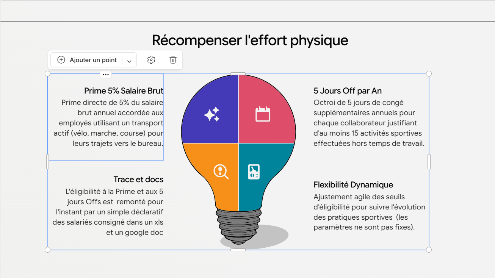

Contexte
Concevoir un POC data de pilotage des avantages sportifs collaborateurs, de l'ingestion RH/sport au calcul des droits et au suivi operationnel
Architecture technique
Pipeline medaillon Bronze/Silver/Gold, ETL Python + Delta Lake, orchestration Kestra, controles qualite SODA, notifications Slack, exports analytiques pour Tableau
Réalisations concrètes
- Architecture médaillon Bronze/Silver/Gold
- Contrôles qualité déclaratifs SODA
- Orchestration complète avec Kestra
- Exports analytiques vers Tableau